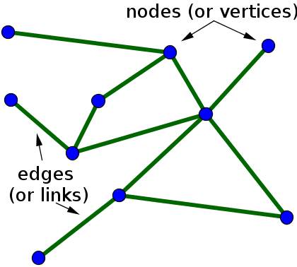

Overview of Networks
A network is simply a collection of connected objects. We refer to the objects as nodes or vertices, and usually draw them as points. We refer to the connections between the nodes as edges, and usually draw them as lines between points.In mathematics, networks are often referred to as graphs.

What is a graph?
A graph is a collection of nodes and edges that represents relationships:
Nodes are vertices that correspond to objects.
Edges are the connections between objects.
The graph edges sometimes have Weights, which indicate the strength (or some other attribute) of each connection between the nodes.
These definitions are general, as the exact meaning of the nodes and edges in a graph depends on the specific application. For instance, you can model the friendships in a social network using a graph. The graph nodes are people, and the edges represent friendships. The natural correspondence of graphs to physical objects and situations means that you can use graphs to model a wide variety of systems.
Network Diagram
 Everything is interconnected in this world. With the rise of the social networking sites and communication tools, everyone can now witness the importance of relationship and theories such as six degrees of separation. The same is true not just for human relationships but also for business entities.The ability to visualize the relationship between items, the weightage of the relationship and the flow often brings out the untold insights into limelight, which are otherwise not very evident. Simple numbers and basic charts won’t be enough to discover and tell such data stories.We need new visualization techniques for the complex world of relationship and Network Graph thrives to the forefront for such scenarios.
Everything is interconnected in this world. With the rise of the social networking sites and communication tools, everyone can now witness the importance of relationship and theories such as six degrees of separation. The same is true not just for human relationships but also for business entities.The ability to visualize the relationship between items, the weightage of the relationship and the flow often brings out the untold insights into limelight, which are otherwise not very evident. Simple numbers and basic charts won’t be enough to discover and tell such data stories.We need new visualization techniques for the complex world of relationship and Network Graph thrives to the forefront for such scenarios.
 This type of visualisation shows how things are interconnected through the use of nodes / vertices and link lines to represent their connections and help illuminate the type of relationships between a group of entities.Typically, nodes are drawn as little dots or circles, but icons can also be used. Links are usually displayed as simple lines connected between the nodes. However, in some Network Diagrams, not all of the nodes and links are created equally: additional variables can be visualised, for example, by making the node size or link stroke weight proportion to an assigned value.
This type of visualisation shows how things are interconnected through the use of nodes / vertices and link lines to represent their connections and help illuminate the type of relationships between a group of entities.Typically, nodes are drawn as little dots or circles, but icons can also be used. Links are usually displayed as simple lines connected between the nodes. However, in some Network Diagrams, not all of the nodes and links are created equally: additional variables can be visualised, for example, by making the node size or link stroke weight proportion to an assigned value.
By mapping out connected systems, Network Diagrams can be used to interpret the structure of a network through looking for any clustering of the nodes, how densely nodes are connected or by how the diagram layout is arranged.The two notable types of Network Diagram are "undirected" and "directed".
Undirected Network Diagrams only display the connections between entities. They have edges that do not have a direction. The edges indicate a two-way relationship, in that each edge can be traversed in both directions.
Directed Network Diagrams show if the connections are one-way or two-way through small arrows. The edges indicate a one-way relationship, in that each edge can only be traversed in a single direction.